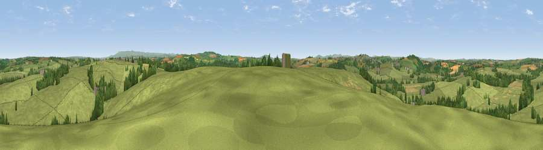

Viewpoint near Liftondown
#20038 in England · top 38% of its area beats it · near Liftondown · access?Where it is
The exact computed spot (SX 36575 85925). Click the marker for map links.
Public access: no public right of way or access land is recorded at this exact spot — it may be on private land. Computed from Natural England's CRoW access layer and OpenStreetMap rights of way — not the legal definitive map. Always verify locally.
The view, rendered

A 360° render of this exact spot computed from the terrain model, tree cover and land cover — summer colours, afternoon light, calibrated against photographs of famous viewpoints. Real trees, hedges and buildings will differ in detail.
The panorama
Grey silhouette: terrain skyline in each direction (720 bearings, Earth curvature and refraction included). Dashed green: skyline with trees (+15 m) and buildings (+8 m) as obstacles. Blue strip: how far the ground is visible on each bearing.
Where the view opens
Wedge length = distance to the farthest visible ground on that bearing (vegetation-aware). Rings at 10, 25 and 50 km.
What fills the view
85% grassland · 10% woodland · 4% cropland · 1% built-up
Angular shares of the visible panorama (visual magnitude), not map area. Landscape diversity 0.24 (0–1 Shannon).
Key numbers
More beautiful places nearby
The staircase of upgrades: each row has a higher view potential than everything closer. Driving times are estimates from straight-line distance, calibrated against real road routing — check an actual route before setting out.
| Place | Direction | Drive | Score |
|---|---|---|---|
| Viewpoint near Tinhay | SE · 4 km | ~8 min | 61.3 |
| Viewpoint near Bradstone | SSE · 6 km | ~13 min | 64.1 |
| Viewpoint near Chillaton | SE · 8 km | ~15 min | 65.2 |
| Brent Tor | ESE · 12 km | ~22 min | 73.4 |
| Viewpoint near Kelly Bray | S · 14 km | ~26 min | 73.8 |
| Kit Hill | S · 15 km | ~26 min | 80.3 |
| Viewpoint near Crackington Haven | WNW · 24 km | ~39 min | 81.8 |
| Viewpoint near Lesnewth | WNW · 25 km | ~40 min | 87.7 |
50.65003, -4.31307 · source: screening · position refined by local search. Computed location — check access rights before visiting.